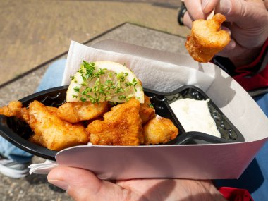
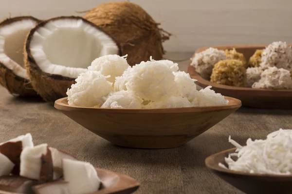

A Cidade Maravilhosa
O Rio de Janeiro, carinhosamente conhecido como "Cidade Maravilhosa", é um dos destinos mais icônicos do Brasil. Com paisagens deslumbrantes que combinam montanhas, florestas e praias paradisíacas, a cidade oferece uma atmosfera vibrante e única, marcada pela alegria e hospitalidade de seu povo.
Considerada uma das Novas Sete Maravilhas do Mundo, a estátua do Cristo Redentor é um símbolo do Brasil. Localizada no topo do Morro do Corcovado, a vista panorâmica da cidade é de tirar o fôlego.
O bondinho do Pão de Açúcar é uma das experiências mais icônicas do Rio. Do alto, é possível apreciar uma vista espetacular da Baía de Guanabara, das praias e da cidade ao entardecer.
As praias mais famosas do Brasil oferecem um cenário perfeito para relaxar, praticar esportes e aproveitar o clima vibrante do Rio. Não deixe de caminhar pelo calçadão com o famoso padrão de ondas em pedras portuguesas.
Um templo do futebol, o Estádio do Maracanã é parada obrigatória para amantes do esporte e da história.
A culinária do Rio reflete sua diversidade cultural:
Tradicional prato de feijão preto com carnes, acompanhado de arroz, couve refogada e laranja.
Um clássico dos bares cariocas.
Delícias típicas vendidas nas praias.
O coquetel mais famoso do Brasil, perfeito para acompanhar o pôr do sol.